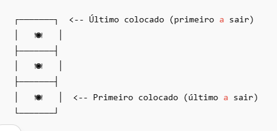
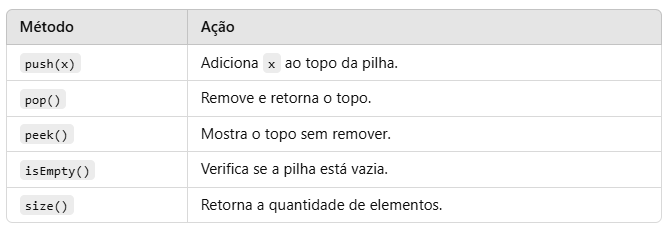
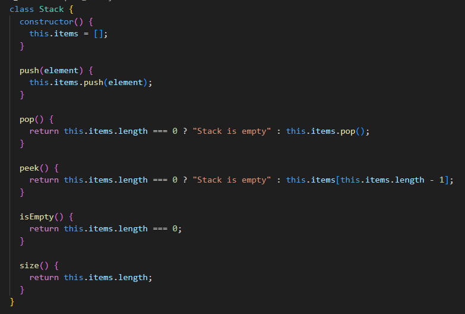
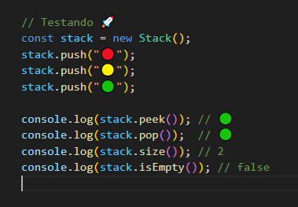
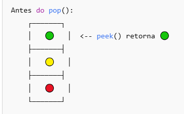
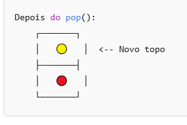
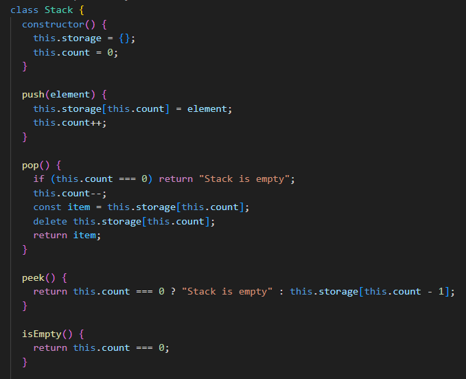
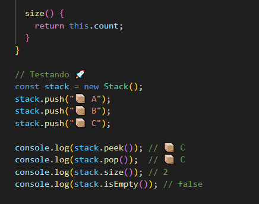
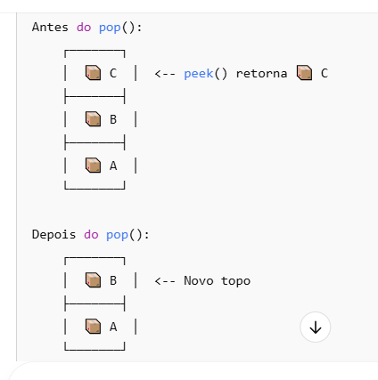

🎯 O que é uma Pilha (Stack)?
Uma pilha é uma estrutura de dados que segue o princípio LIFO (Last In, First Out),
ou seja, o último item inserido é o primeiro a ser removido.
🔎 Exemplo do Mundo Real
Imagine uma pilha de pratos empilhados:

Você coloca um prato no topo 🔼 (push).
Você remove o prato do topo 🔽 (pop).
⚙️ Operações Principais

🛠 Implementação de Pilha em JavaScript
📌 Forma Simples: Usando Array
No JavaScript, arrays já possuem os métodos push() e pop(), então podemos usá-los diretamente.


📌 Visualização da pilha durante o teste:


📌 Forma Avançada: Usando Objeto
Se quisermos mais controle, podemos usar um objeto para armazenar os elementos.


📌 Visualização da pilha durante o teste:
